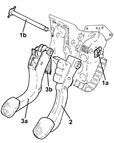

3330B16 pedal unit assembly - dismantle rebuild at bench
- Path
- Procedures > 33 BRAKING SYSTEM > 3330 HYDRAULIC BRAKING SYSTEM > 3330B pedal unit > 3330B16 pedal unit assembly - dismantle rebuild at bench
- Kind
- repair procedure (removal / refitting; the operation number is the code)
- Applies to
- all engines; all production periods
- Interactive page
- https://sloeber94.github.io/elrnDB-lYpsln/en/#/2429168
Applies to: all engines; all production periods
1. Remove clip (1a) and withdraw pin (1b).
2. Remove the brake pedal.
3. Remove clutch pedal (3a) wiht spring device (3b).

Applies to: all engines; all production periods
Refit the clutch pedal with spring device and brake pedal, then secure with the pin and clip.